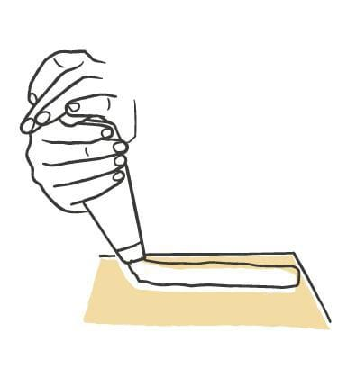
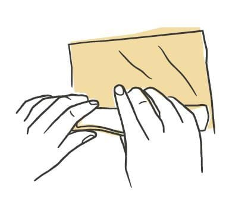
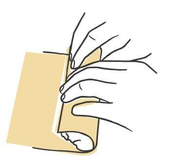
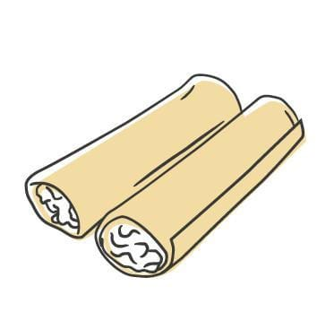

Pasta / Shapes
Cannelloni
- Dough
- Egg Dough
- Source
- Pasta, Missy Robbins
- Formed
- stuffed
- Region
- Found across Italy, most notably Emilia-Romagna (meat filling under béchamel), Abruzzo, Tuscany, and Campania
Shaping




Method
- Make your chosen egg-based dough, then roll and sheet it.
- Dust a wooden board with 00 flour. Cover a sheet pan with parchment, then dust the parchment with semolina.
- Cut the sheets into 5 by 7-inch rectangles with a plain pastry cutter, trimming away the ragged edges. Save the scraps for soup. A knife and ruler work too.
- Separate the rectangles, give each a light dusting of 00 flour, and stack them in groups on the prepared pan. Dust the pan again with semolina.
- Boil a large pot of water and salt it generously. Line a second sheet pan with parchment and brush the paper with a little olive oil.
- Blanch the sheets about 1 minute, so they turn tender without going soft. Lift them out with a spider and lay them flat in a single layer on the oiled pan, separating layers with lightly oiled parchment.
- Line and oil a third sheet pan the same way. Clean off the board. Put one cooked sheet down lengthwise in front of you. Using a pastry bag cut to a 1-inch opening, pipe a line of filling 1/2 inch in from either side and 1 inch up from the bottom edge.
- Fold the bottom edge over the filling, pressing with your thumbs so the pasta hugs it, then roll the sheet over itself again into a cylinder.
- Set the finished tube seam side down on the oiled pan.
- Work through the remaining sheets the same way, setting each finished tube on that oiled pan.
- To hold, cover with plastic wrap and refrigerate up to 24 hours.
Notes
- Sheets are cut 5 by 7 inches with a plain pastry cutter, one tube per rectangle.
- The sheets get blanched for roughly a minute before filling, then held flat on lightly oiled parchment with more oiled parchment between the layers.
- Filling per piece: one line piped through a 1-inch opening, inset 1/2 inch from each side and 1 inch up from the bottom edge.
- Seal: no crimp or pinch at all. The bottom edge folds over the filling and the sheet rolls over itself once more, and the tube rests seam side down.
- No drying step and no dusting of the finished tubes. They sit on oiled parchment, covered, for up to 24 hours in the refrigerator.
- This is a baked pasta. It gets assembled in a pan and finished in the oven rather than boiled and sauced.
- Served Italian American style, filled with cheese and spinach and topped with red sauce and more cheese.